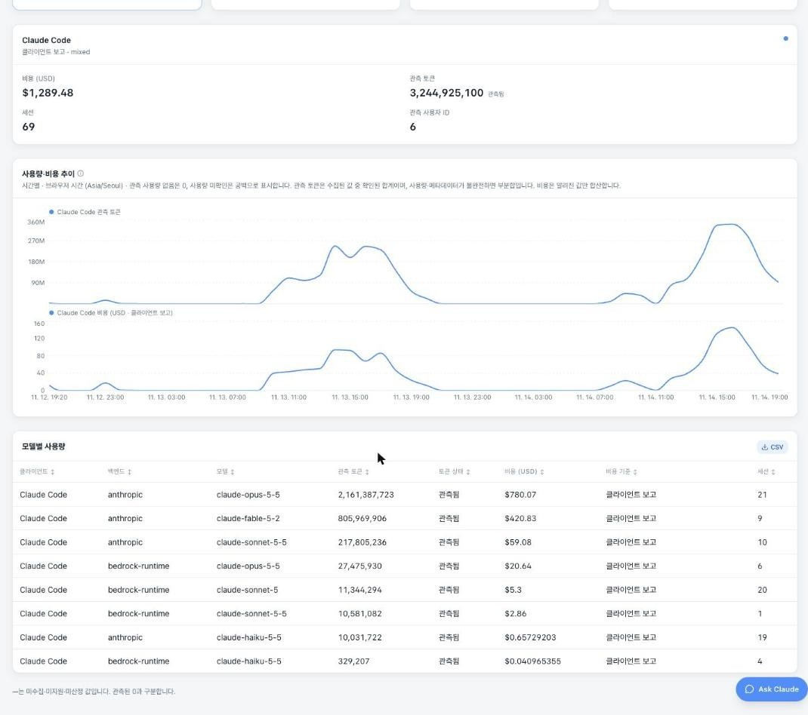
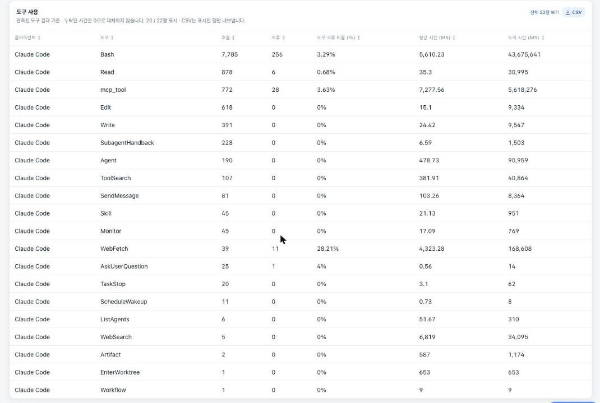
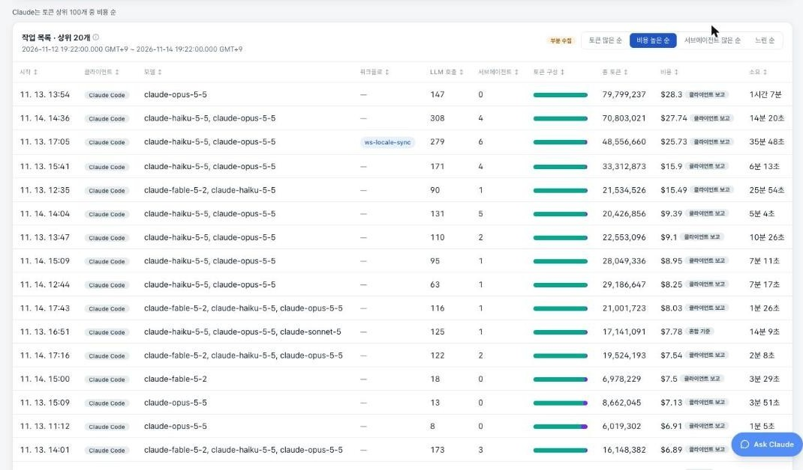
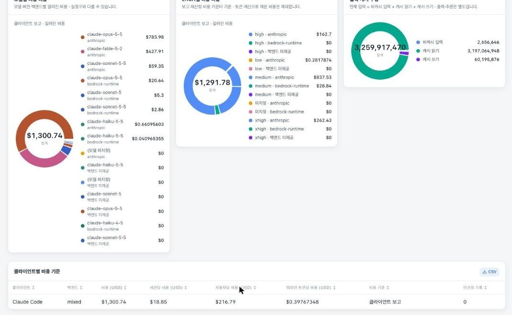
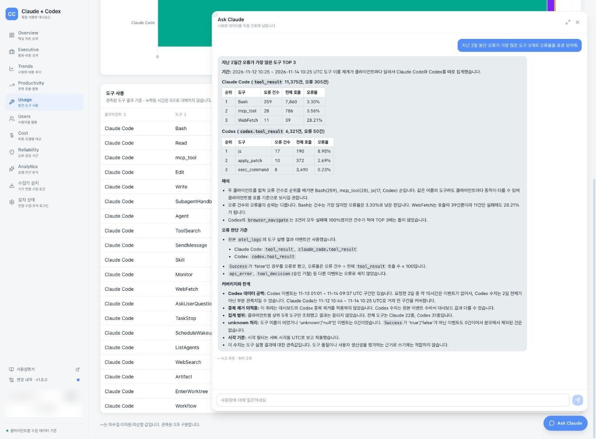

Chapter 6. 조직의 비용 보고 통제하기
쓴 만큼 보고, 넘치면 막는다 (Claude Code v2.1.319, 2026-11-08 리허설 검증)
Oh, Junseok
Sr. Solutions Architect
AWS Korea
기대 주제 FinOps, 그리고 비용 가시화
사전 설문 결과로 정한 이 챕터의 목표
참가 확정자 142명 중 26명이 FinOps(모델 라우팅, 토큰 메터링, OTel 대시보드)를 기대 주제로 골랐습니다.
자유 의견에도 조직 사용 비용의 가시화, 사내 토큰 배분 정책을 묻는 질문이 있었습니다. 이 챕터는 OTel로 모은 사용량을 대시보드로 보고, 한도로 막는 법입니다.

강의와 데모, 그리고 랩
계측, 계약 단가, 게이트웨이 지출 한도의 순서
쓴 만큼 보고, 넘치면 막는다
- 01Bedrock에서 비용을 보는 법
- 02OTel 대시보드
- 03modelPricing과 AWS 쪽 도구
- 04Claude Apps Gateway (참가자 실습)
Bedrock 가시성, 콘솔과 자체 계측뿐
셋업별 비용 관리 방법
Claude Team, Enterprise
Claude Console
Amazon Bedrock
사용자별로 보려면 클라우드 콘솔만으로는 부족하고, 직접 설치한 계측이 필요합니다.
대시보드가 없습니다
계측을 설치해야 보이고, 설치하지 않은 사람은 잡히지 않습니다.
프롬프트 하나가 대시보드 숫자가 되기까지
요청 하나가 남기는 기록의 길 (랩 환경 기준)
정책으로 켜는 OTel
managed settings env 한 블록이면 모두에게
OTel이 보내는 것, 보내지 않는 것
지표와 이벤트는 가고, 본문은 기본으로 남는다
숫자로 쌓이는 8가지
token.usage입력, 출력, 캐시 읽기, 캐시 쓰기cost.usage추정 비용 (USD)session.count,active_time.totallines_of_code.count,commit.count,pull_request.countcode_edit_tool.decision편집 허용, 거부
한 건씩 남는 기록
api_request모델, 토큰, cost_usd, 걸린 시간tool_result도구 이름, 성공 여부, 걸린 시간tool_decision허용, 거부와 그 출처user_prompt프롬프트 길이api_error상태 코드, 재시도
켜야만 나가는 내용
- 프롬프트 본문
OTEL_LOG_USER_PROMPTS - 도구 인자
OTEL_LOG_TOOL_DETAILS - 응답 본문
OTEL_LOG_ASSISTANT_RESPONSES - API 원문
OTEL_LOG_RAW_API_BODIES
금융권 운영은 이 스위치를 끈 채로 두고, 수집기에서 한 번 더 지웁니다.
모든 지표 이름 앞에는 claude_code.가 붙습니다. 비용 지표는 추정치이고, 정산은 AWS 청구서가 기준입니다.
ccdash, 워크숍 사용량 대시보드
OTel을 받아 쌓고, 화면과 질문으로 보여 주는 구조
ccdash 화면 둘러보기
스크롤하고, 눌러 보면 보이는 것들 (리허설 데이터, 식별자 가림)





이틀간 우리가 쓴 토큰
DEMO, 강사 대시보드 (URL은 현장 안내)
- 1랩 환경은 Day 1부터 OTel 수집 중 (참가 안내문 고지)
- 2전체 토큰, 비용 추이, Capstone 구간 피크 확인
- 3모델별, 도구별 분포, 캐시 적중률
- 4내 참가자 ID로 내 사용량 찾기
- 5가장 비용이 컸던 패턴을 Ch5의 원리로 해석
화면에는 참가자 ID만 표시합니다. 회사별 사용량은 노출하지 않습니다.

추정 비용을 청구서에 가깝게
계약 단가로 보여 주는 modelPricing
managed-settings.json
{ "modelPricing": { "multiplier": 0.9 }}# /usage, Total cost … at your organization's configured rates
- managed settings에서만 유효 (v2.1.242+)
- multiplier가 1보다 작으면 할인, 크면 할증
- 모델별 단가는 overrides로
- 표시만 바꿈, 청구는 그대로
- 숫자는 계약 단가를 입력
예시: 원리 1의 /usage 세션 $0.55에 배수를 곱한 표시 금액입니다.
실제 정산은 AWS 청구서입니다. modelPricing은 /usage와 대시보드의 숫자를 청구서에 가깝게 맞추는 표시 설정입니다.
AWS 쪽에서 보는 비용
Claude Code 계측과 별개로 계정에서 보이는 것, 둘을 대사
Bedrock 앞단의 게이트웨이
Claude Apps Gateway, 공식 구성과 이번 랩 구성
사용자별 지출 한도를 실시간으로
지출 한도의 범위, 기간, 초과 시 동작
한도 대비 사용액은 설명용 예시입니다.
운영 전에 정할 두 가지
기본값이 금융권 기대와 다를 수 있습니다
저장소 장애 시
- 기본은 fail-open: 요청 통과, 경고 로그
- enforcement.fail_closed_on_error: true면 차단
- 추론 중단과 미계측 지출 중 선택
개인정보
- principal_emails 테이블에 이메일, 이름, 그룹 저장
- 기본 90일 보존 (identity_retention_days)
- 퇴사, 열람 요청 시 해당 행 삭제
- spend, audit은 OIDC sub만 참조
그룹 한도와 사용자 한도, 누가 이기나
QUICK CHECK, 손을 들어 답해 주세요
standard-users 그룹 한도가 $50/일인데 bob에게만 1센트 사용자 한도를 걸면?
정답 B. 사용자 한도가 그룹 기본값보다 우선합니다. 진행 중인 응답은 끝까지 갑니다.
텔레메트리는 어디로 가는가
LAB, Chapter 6 TASK 01
- 1settings.json의 OTEL_* 환경 변수 읽기
- 2otelcol, fanout 타이머 active 확인
- 3scrub_logs: 내보내기 전 프롬프트 본문 삭제 규칙 찾기
- 4exporters에서 CloudWatch + 중앙 대시보드 이중 전송 확인
Hands-on Lab 포털에서 Chapter 6 TASK 01을 엽니다.
모델 정책과 지출 한도
LAB, 게이트웨이 실습 Chapter 6 TASK 02부터 03까지
- 1use_gateway, alice 로그인, /model에 Opus 포함, /usage Spend limit 확인
- 2bob으로 재로그인, Opus 없음, 질문 1개로 지출 기록
- 3Terminal 2: Admin API로 bob 조회, 사용자 한도 1센트
- 4bob 다음 요청이 지출 한도 메시지로 거절
- 5한도 DELETE, 그룹 한도 복원, use_bedrock_direct
각자 계정의 게이트웨이로 진행합니다. Hands-on Lab 포털, Chapter 6 TASK 02부터 03. 게이트웨이 장애 팀은 강사 화면을 봅니다.
내 계정에 비용 설정 적용
선택 LAB, Chapter 6 선택 TASK 04
- 1managed settings에 modelPricing.multiplier 병합
- 2/usage에서 configured rates 표시 확인
- 3대시보드에서 적용 전후 내 사용량 비교
- 4백업으로 원복
각자 Bedrock 직결로 진행합니다. Hands-on Lab 포털, Chapter 6 선택 TASK 04.
자주 받는 질문
더 알아보기, OTel 지표, 이상 징후, Admin API
대시보드의 숫자는 어디서 오나
지표 이름 앞에는 모두 claude_code. 접두사가 붙습니다.
숫자를 보고 무엇을 의심하나
그룹 기본값 + 예외 사용자
# 그룹 기본값: standard-users 1인당 하루 $50curl -X POST "$GW/v1/organizations/spend_limits" \ -H "x-api-key: $WRITE" \ -H "Content-Type: application/json" \ -d '{"scope":{"type":"rbac_group", "rbac_group_id":"standard-users"}, "amount":"5000","period":"daily"}'# 현재 적용 한도와 사용액curl -G "$GW/v1/organizations/spend_limits/effective" \ --data-urlencode 'period[]=daily' -H "x-api-key: $READ"
amount는 US 센트 문자열입니다. 그룹 한도는 공유 풀이 아닌 1인당 기본값이고, 사용자 한도가 그룹보다 우선합니다. write 키는 소수만, 비밀 저장소에 보관합니다.
보고, 막기
Chapter 6 Key Takeaways
Thank You
다음은 Capstone 쇼케이스와 Closing입니다. 질문은 Slack #20261116-claude-code-workshop-for-fsi 채널에 언제든 편하게 남겨 주세요.
수고하셨습니다!